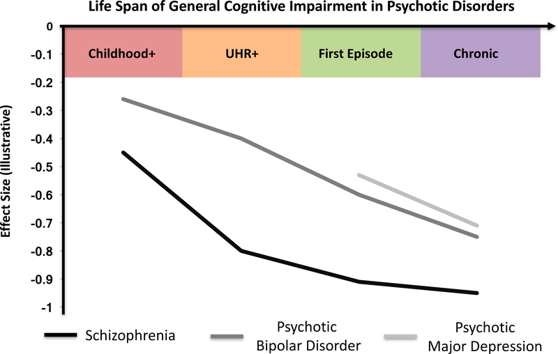

전구기 환자의 인지기능
조현병의 신경발달학적 가설을 지지하는 유력한 증거 중의 하나는 인지 장애가 발병 이전부터 관찰된다는 것이다. 인지 기능의 변화는 조현병 뿐만 아니라, 조현형 인격장애를 비롯한 모든 조현 스펙트럼 장애에서 관찰된다. 심지어 약화된 정신병 증후군(Attenuated Psychosis Syndrome, APS)만을 경험하고 있는 환자들도 인지 저하를 보인다[1] 뿐만 아니라 아직 발병하지 않은 환자의 일차 친족, 즉 고위험군에서도 인지 장애가 관찰되곤 한다.[4] 이러한 관찰결과는 인지 장해가 정신병적 증상에 선행하며, 신경발달 과정 상의 문제점을 더욱 밀접하게 반영하는 지표임을 시사한다.
그렇다면 인지 장애를 내적 표현형 중 하나로 간주하여 고위험군을 찾아내거나, 발병으로 전환되는 환자를 찾아내는데 사용할 수 있을 것이다.[5–8] 그러나 단순히 인지 기능만을 살핀다면 인지 저하를 유발할 수 있는 기타 상태들과 분간이 되지 않을 터이므로, 인지 장해가 진행되는 양상을 조사하는 것이 중요할 것이다. 그런데 문제는 어느 시점에 인지 저하가 일어나는지 분명하지 않다는 것이다. 즉 전구기가 시작되기도 전인지, 전구기 동안인지, 아니면 발병 직전인지 지금으로서는 확실한 데이터가 없다. 북미에서 시행된 대규모 NAPLS 연구에서는 그리 심하지 않은 APS라고 해도, 실제로 발병한 초발 환자만큼이나 인지 기능이 떨어져 있었다. 게다가 APS로 진단될 당시 이미 주의집중력과 기억력에 심한 문제를 보였던 환자는, 발병으로 전환될 위험도 더 높았다. 반면 APS 진단 시점에서 실제 발병에 이를 때까지 인지 저하가 더 진행된다는 증거는 보이지 않았다. 이는 애초에 조현병으로 발병할 환자가 미리 정해져 있으며, 조기에 진단한다고 해도 발병을 막는데 큰 역할을 하지 못할 수 있다는 비관적인 견해로 이어진다.[1,9]
1 내적 표현형 (endophenotype): 외적으로 나타나는 정신질환과 그 이면에 깔린 병인론적 지표, 그 중간 어딘가에 위치하는 생리학적 지표로, 병태생리를 직접 반영하지는 않을지라도 좀더 유전적 영향을 많이 받고 객관적으로 측정하기 쉬운 지표들을 의미한다. 예를 들어 조현병이라는 진단 자체는 생물학적 요인 뿐 아니라 심리사회적 요인의 영향을 받지만, 조현병 환자에게 특징적으로 나타나는 뇌파 변화는 좀더 순수한 생리학적 지표로 유전 연구를 비롯한 생물학적 연구에 훨씬 유리하다.
2 North American Prodrome Longitudinal Study (NAPLS): 미국의 University of California San Francisco에서 주도하에 북미의 여러 대학이 참여하고 있는 종적 관찰 연구로, 고위험군 환자를 추적하여 발병에 이르게 하는 요인을 발견하는 것을 목적으로 하고 있다.
적지 않은 학자들이 인지 기능의 저하가 조현병으로의 전환을 예측할 수 있는 유력한 지표라고 말한다. 그러나 그 말이 곧, 고위험군 환자의 인지 기능을 개선시키면 전환을 막을 수 있다는 뜻은 아니다. 인지 저하가 언제 진행되느냐도 중요한 문제인데, 앞에서 지적한 바와 같이 APS가 문제가 될 때 이미 인지 저하가 상당히 진행된 상태라면 예방 노력이 의미가 없어진다. 아무래도 발병 전 고위험군에게 적극적인 항정신병 약물 치료를 하기 어렵기 때문에, 인지 재활을 치료 기법으로 활용하는 경우가 많은데, 이런 노력이 얼마나 전환을 막을 수 있을 지는 의문이다.
하지만 분명한 것은, 일시적으로 APS를 겪었다고 해도 모든 환자가 조현병으로 전환되지는 않는다는 점이다. APS 진단 당시에 인지 기능이 많이 떨어져 있다 하더라도 정신병적 증상이 가라앉으면서 인지 기능도 함께 호전되는 경우가 많다. 정신병적 증상도, 인지 기능도 잘 회복되지 않는 환자들은 앞으로도 계속 기능 수준이 떨어져 있을 가능성이 크기 때문에, 적극적인 치료가 무엇보다 필요하다.[10] 또 한가지 중요한 것은 APS 단계에서는 감별 진단이 어렵기 때문에, 모든 환자를 잠재적 조현병 환자로 간주할 수는 없다. Sheffield 등[11]의 고찰에 따르면 진짜 조현병 환자들은 고위험군에 놓여있을 당시부터 이미 상당한 인지 저하가 진행되며, 발병 직전과 발병 후의 인지 기능의 차이는 크게 드러나지 않는다. 이에 비해 조현병이 아닌 다른 정신병 환자들은 인지 저하가 상대적으로 늦게 시작되기 때문에, 발병 후에 점차 악화되는 양상을 보인다. 인지 저하가 늦게 시작되며 좀더 가역적인 후자의 환자들은 조기 치료가 상당한 성과를 거둘 수 있을 것이다.

정신병적 증상을 동반한 몇가지 정신질환에 있어서 인지 기능 저하의 시간적 변화 양상 [11]
초발 삽화 시점의 인지
발병 훨씬 전부터 인지 기능 저하가 진행되어 왔다면, 초발 시점에 이미 인지 기능이 상당히 떨어져있다는 것은 놀랄 일도 아니다. 문제는 전환 즉 발병으로 인해 인지 저하가 더욱 가속되는지, 빨리 치료하면 적어도 더 이상의 저하를 막을 수 있는지에 관한 것이다. 학자들은 이 문제에 대해서도 첨예하게 의견이 엇갈린다. 어떤 이들은 발병 시점에 이미 돌이킬 수 없는 지경에 이르렀기 때문에 큰 회복을 기대할 수 없다고 하고, 또 다른 이들은 발병 후 처음 몇년 동안은 치료 반응이 좋기 때문에, 적극적인 치료를 하면 인지 기능도 지킬 수 있다고 믿는다.
후자의 견해를 지지하는 학자들은 정신병의 치료받지 않은 기간(DUP)이 길면 길수록 인지 저하의 정도가 심하다는 것을 근거로 내세우고 있다.[12] 물론 그렇지 않다는 관찰 결과도 많아 근거가 확고하다고 보기는 어렵다.[13] 분명한 것은 치료기술이 발전되고 문턱도 낮아지면서 인격의 황폐화에 이르는 환자들이 드물어졌고, 덩덜아 크레펠린의 표현처럼 조발성 치매(dementia praecox)에 이르게 되는 환자들을 찾아보기 힘들어졌�다는 것이다.[14,15] 이렇게 변화된 상황에서 진행된 연구들을 보면, 초발 이후 몇년 동안 인지 기능은 안정적으로 유지되는 것으로 보인다.[16] Albus 등[17]은 초발 환자의 인지 기능을 치료 개시 후 5년과 15년 후에 조사하였는데, 인지 장애는 초발 삽화 때부터 존재했지만 15년 후에도 큰 변화없이 유지되었다. 종합하면 적어도 표준적인 치료를 받고 최대한 재발을 억제한다면, 발병 후 수년 동안 비가역적인 인지 손상을 두려워할 필요는 없을 것같다. 그러나 이러한 낙관적인 전망은 오랜 기간 동안 관리를 제대로 한 환자에게만 해당된다.
만성 조현병에서의 인지
발병한지 10 여년 내에는 현저한 인지 기능 저하가 보이지 않는다는 반복된 관찰 결과에도 불구하고, 크레펠린이 애초에 보고한 것처럼 만성 조현병 환자들의 인지 장애는 상당히 두드러져 보인다.[18–21] 이는 특정한 영역에 국한된 손상이라기 보다는 전반적인 인지 저하로 특징지워진다.[22] 그러나 그 정도를 가늠할만한 데이터는 많지 않다. 종적 연구를 한다고 해도 기껏해야 10년 이내에 그치는 경우가 많기 때문에, 환자들이 나이가 들어가면서 얼마나 정상대조군과 격차가 벌어지는지 알기 힘들다. 나이든 조현병 환자라고 해도 1~6년의 관찰기간 동안 별다른 저하가 없었다는 연구가 있는가 하면[20], 65세가 넘어가면서 정상대조군과의 격차가 벌어지며 치매도 일찍 시작된다는 견해도 있다.[23,24] Maltais 등[25]은 조현병 환자의 나이와 MMSE 점수간의 관계를 고찰하였는데, 4년이 지날때마다 MMSE 점수가 1점씩 하락하며, 이는 정상대조군의 5배에 달하는 속도라고 하였다. 그렇다 해도 종적 변화는 개인차가 무척 심하며, 정신병적 증상 자체의 경과와도 밀접한 관계가 있는 듯 하다.[26]
이제는 더 이상 크레펠린의 조발성 치매 개념이 유효하지 않다고 해도, 현저하게 인지 기능이 떨어지는 환자들이 일정 비율로 존재한다.[27,28] 장기간 수용 치료를 받은 노인 환자는 인지 저하가 특히 심하다.[27,29] 또한 치료가 잘 안 되어 치료 첫 해에 관해에 도달하지 못한 환자는, 10년 후 추적했을 때도 역시 인지 저하가 심하였다.[13] 이러한 증거를 보면 치료가 제대로 되었느냐, 사회적 고립을 얼마나 막아낼 수 있었느냐가 향후 인지 기능을 결정짓는 요인인 것처럼 보인다. 그러나 치료가 잘 되었느냐 아니냐를 떠나 애초에 인지 저하가 심한 환자가 정해져 있다는 반론도 만만치 않다. 발병 연령과 향후 인지 저하 정도와의 관련은 반복적으로 관찰되었다.[30] 발병 연령이 늦은 환자들이 전반적 인지는 물론, 주의력, 언어유창성, 시공간 기술 등 특정 영역에서도 인지 저하가 덜 심하다. 음성 증상과 인지 저하의 연관성도 반복해서 보고되었는데[27], 결핍 조현병(deficit schizophrenia)의 논의에서 살펴보았듯이 이러한 아형은 애초부터 정해져 있는 것으로 보인다.
정리하며 인지 기능 저하는 발병 전에 이미 시작되어 발병 당시에는 이미 정점에 도달하며, 이후 수년 동안은 안정 상태에 접어드는 것 같다. 대부분의 환자들은 이 상태에서 더 나빠지지 않지만, 일정 비율의 환자들은 질병이 만성화되면서 인지 기능 역시 악화일로를 치달아 치매와 구분하기 어렵게 된다. 그러나 이러한 악화 여부가 치료에 의해 결정되는 것인지, 애초부터 정해져 있는 지는 여전히 의문에 싸여있다.
인지 장애와 사회적 기능
과거의 의사들은 환자들이 사회에 복귀하지 못하는 것은 무엇보다 사고 장애와 망상, 편집적 태도나 공격성 때문으로 생각했기 때문에, 이들 증상만 가라앉히면 사회에 복귀할지 여부는 전적으로 환자의 의지에 달려있다고 여겼다. 그러나 지난 수십년간의 연구결과를 통해 사회복귀를 막는 것이 음성/인지 증상 때문이라는 것이 점점 더 명확해졌다. 제대로 삶을 살아보려는 의욕이 충만해도, 일상 생활 및 직업에서 요구되는 정보 처리를 제대로 할 수 없다면, 사회복귀에 실패할 수 밖에 없다. 따라서 음성 증상과는 독립적으로 인지 증상의 영향을 살펴볼 필요가 있다.
인지와 지역사회 내 적응의 관계를 평가한 연구에서, 입원 중 측정한 언어 기억(verbal memory) 능력이 15년 후 지역사회 내에서의 기능적 독립 정도를 예측했다고 보고되었다.[31] 청소년 조현형 환자들의 초발 당시 주의력과 언어/작업 기억은 1년 후 대인관계, 삶의 만족도, 지역사회 적응 정도와 상관관계를 보였다.[32] 특히 청소년기의 복잡한 발달과제는 사회 인지를 포함한 고차적 인지기능 발휘를 요구하므로, 조현병 환자나 고위험군의 저하된 인지 능력은 발달 과제를 수행하는데 많은 어려움을 초래한다.
성인기의 사회적 기능은 정신병적 증상보다는 인지 기능에 더 큰 영향을 받는다.[33] 특히 사회적 기능을 결정하는 인지 영역으로 지목된 것은 주의력, 언어기능과 함께 작업기능, 집행기능과 같은 고차적 인지 기능이었다.[34] 그러나 초발 환자를 대상으로 한 연구들에서의 일관된 결론과는 달리, 만성 환자 대상 연구에서는 인지 기능과 사회 기능과의 연관이 불분명하였다.[35,36] 만성 환자들은 음성 증상의 비중이 높고, 오랜 투병으로 인해 사회에 복귀할 의욕 및 절실함, 그리고 자원이 고갈되어 있다. 인지 기능의 영향력이 떨어지는 것은 이 때문일지도 모른다.
최근에는 사회복지 프로그램을 통해 직업을 알선해주는 일이 많기 때문에, 직업을 구하고 못 구하고 보다는 직업을 얼마나 유지하는지가 문제일 것이다. 직업 재활 프로그램에 참여한 환자를 대상으로 한 연구에서, 인지 기능은 직업을 구하고 못 구하고는 예측하지는 못하였지만, 환자의 근속 기간은 유의하게 예측할 수 있었다.[37] 새로 구한 직장에 처음 적응할 때는 주의력이 무엇보다 중요하고, 이후 직장에서 자리를 잡는데는 언어 기억이 가장 예측력이 강하다고도 한다.[38]
그렇다면 과연 환자의 사회적/직업적 기능 발휘를 결정짓는데 음성 증상과 인지 증상 어느 쪽이 더 결정적인 역할을 하는 것일까? 이는 쉽사리 답할 수 있는 문제가 아니다. 동기가 아무리 있어도 인지가 받쳐주지 않으면 좌절감만 남겠지만[39], 애초에 동기가 없다면 인지 기능을 발휘할 기회조차 생기지 않는다. 제대로 인지 기능을 발휘하여 성공적으로 업무 수행을 해낸 경험이 있어야 동기와 의욕이 고취되지만, 음성 증상에 시달리는 환자는 성공 경험을 통해서도 만족감을 느끼지 못한다. 결국 두 증상 중 어느 것 하나라도 문제가 생기면 사회적/직업적 적응에 실패할 위험이 크다.
References
1.
Harvey PD, Jones MT.
Functional deficits in attenuated psychosis syndrome and related conditions: Current and future treatment options. Schizophrenia Research: Cognition. 2019;17: 100152. doi:
10.1016/j.scog.2019.100152
2.
Erlenmeyer-Kimling L, Cornblatt B.
High-risk research in schizophrenia: A summary of what has been learned. Journal of Psychiatric Research. 1987;21: 401–411. doi:
10.1016/0022-3956(87)90087-2
3.
Snitz BE.
Cognitive Deficits in Unaffected First-Degree Relatives of Schizophrenia Patients: A Meta-analytic Review of Putative Endophenotypes. Schizophrenia Bulletin. 2005;32: 179–194. doi:
10.1093/schbul/sbi048
4.
Trandafir A, Méary A, Schürhoff F, Leboyer M, Szöke A.
Memory tests in first-degree adult relatives of schizophrenic patients: A meta-analysis. Schizophrenia Research. 2006;81: 217–226. doi:
10.1016/j.schres.2005.09.005
5.
Cannon TD, Huttunen MO, Lonnqvist J, Tuulio-Henriksson A, Pirkola T, Glahn D, et al.
The Inheritance of Neuropsychological Dysfunction in Twins Discordant for Schizophrenia. The American Journal of Human Genetics. 2000;67: 369–382. doi:
10.1086/303006
6.
Egan MF, Goldberg TE, Gscheidle T, Weirich M, Rawlings R, Hyde TM, et al.
Relative risk for cognitive impairments in siblings of patients with schizophrenia. Biological Psychiatry. 2001;50: 98–107. doi:
10.1016/s0006-3223(01)01133-7
7.
Braff DL, Light GA.
The use of neurophysiological endophenotypes to understand the genetic basis of schizophrenia. Dialogues in Clinical Neuroscience. 2005;7: 125–135. doi:
10.31887/dcns.2005.7.2/dlbraff
8.
Donati FL, D’Agostino A, Ferrarelli F.
Neurocognitive and neurophysiological endophenotypes in schizophrenia: An overview. Biomarkers in Neuropsychiatry. 2020;3: 100017. doi:
10.1016/j.bionps.2020.100017
9.
Seidman LJ, Shapiro DI, Stone WS, Woodberry KA, Ronzio A, Cornblatt BA, et al.
Association of Neurocognition With Transition to Psychosis. JAMA Psychiatry. 2016;73: 1239. doi:
10.1001/jamapsychiatry.2016.2479
11.
Sheffield JM, Karcher NR, Barch DM.
Cognitive Deficits in Psychotic Disorders: A Lifespan Perspective. Neuropsychology Review. 2018;28: 509–533. doi:
10.1007/s11065-018-9388-2
12.
Lappin JM, Morgan KD, Morgan C, Dazzan P, Reichenberg A, Zanelli JW, et al.
Duration of untreated psychosis and neuropsychological function in first episode psychosis. Schizophrenia Research. 2007;95: 103–110. doi:
10.1016/j.schres.2007.05.037
13.
Rund BR, Barder HE, Evensen J, Haahr U, Hegelstad W ten V, Joa I, et al.
Neurocognition and Duration of Psychosis: A 10-year Follow-up of First-Episode Patients. Schizophrenia Bulletin. 2015; sbv083. doi:
10.1093/schbul/sbv083
15.
Häfner H.
Schizophrenia: still Kraepelin’s Dementia Praecox? Epidemiologia e Psichiatria Sociale. 2004;13: 99–112. doi:
10.1017/s1121189x00003328
16.
Sánchez-Torres AM, Moreno-Izco L, Lorente-Omeñaca R, Cabrera B, Lobo A, González-Pinto AM, et al.
Individual trajectories of cognitive performance in first episode psychosis: a 2-year follow-up study. European Archives of Psychiatry and Clinical Neuroscience. 2017;268: 699–711. doi:
10.1007/s00406-017-0857-z
17.
Albus M, Hubmann W, Mohr F, Tiedemann Tv, Pechler S, Drießlein D, et al.
Neurocognitive functioning in patients with first-episode schizophrenia: results of a prospective 15-year follow-up study. European Archives of Psychiatry and Clinical Neuroscience. 2019;270: 689–698. doi:
10.1007/s00406-019-01030-z
18.
Cognitive functioning in late-life schizophrenia: a comparison of elderly schizophrenic patients and patients with Alzheimer’s disease. American Journal of Psychiatry. 1996;153: 1274–1279. doi:
10.1176/ajp.153.10.1274
19.
Sponheim SR, Jung RE, Seidman LJ, Mesholam-Gately RI, Manoach DS, O’Leary DS, et al.
Cognitive deficits in recent-onset and chronic schizophrenia. Journal of Psychiatric Research. 2010;44: 421–428. doi:
10.1016/j.jpsychires.2009.09.010
20.
Irani F, Kalkstein S, Moberg EA, Moberg PJ.
Neuropsychological Performance in Older Patients With Schizophrenia: A Meta-Analysis of Cross-sectional and Longitudinal Studies. Schizophrenia Bulletin. 2010;37: 1318–1326. doi:
10.1093/schbul/sbq057
21.
Zanelli J, Mollon J, Sandin S, Morgan C, Dazzan P, Pilecka I, et al.
Cognitive Change in Schizophrenia and Other Psychoses in the Decade Following the First Episode. American Journal of Psychiatry. 2019;176: 811–819. doi:
10.1176/appi.ajp.2019.18091088
22.
Hochberger WC, Hill SK, Nelson CLM, Reilly JL, Keefe RSE, Pearlson GD, et al.
Unitary construct of generalized cognitive ability underlying BACS performance across psychotic disorders and in their first-degree relatives. Schizophrenia Research. 2016;170: 156–161. doi:
10.1016/j.schres.2015.11.022
23.
RAJJI T, MULSANT B.
Nature and course of cognitive function in late-life schizophrenia: A systematic review. Schizophrenia Research. 2008;102: 122–140. doi:
10.1016/j.schres.2008.03.015
24.
Shah JN, Qureshi SU, Jawaid A, Schulz PE.
Is There Evidence for Late Cognitive Decline in Chronic Schizophrenia? Psychiatric Quarterly. 2011;83: 127–144. doi:
10.1007/s11126-011-9189-8
25.
Maltais J-R, Gagnon G, Garant M-P, Trudel J-F.
Correlation between age and MMSE in schizophrenia. International Psychogeriatrics. 2015;27: 1769–1775. doi:
10.1017/s1041610215000459
26.
Carruthers SP, Van Rheenen TE, Gurvich C, Sumner PJ, Rossell SL.
Characterising the structure of cognitive heterogeneity in schizophrenia spectrum disorders. A systematic review and narrative synthesis. Neuroscience & Biobehavioral Reviews. 2019;107: 252–278. doi:
10.1016/j.neubiorev.2019.09.006
27.
Thompson WK, Savla GN, Vahia IV, Depp CA, O’Hara R, Jeste DV, et al.
Characterizing trajectories of cognitive functioning in older adults with schizophrenia: Does method matter? Schizophrenia Research. 2013;143: 90–96. doi:
10.1016/j.schres.2012.10.033
28.
McCleery A, Nuechterlein KH.
Cognitive impairment in psychotic illness: prevalence, profile of impairment, developmental course, and treatment considerations. Dialogues in Clinical Neuroscience. 2019;21: 239–248. doi:
10.31887/dcns.2019.21.3/amccleery
29.
Friedman JI, Harvey PD, Coleman T, Moriarty PJ, Bowie C, Parrella M, et al.
Six-Year Follow-Up Study of Cognitive and Functional Status Across the Lifespan in Schizophrenia: A Comparison With Alzheimer’s Disease and Normal Aging. American Journal of Psychiatry. 2001;158: 1441–1448. doi:
10.1176/appi.ajp.158.9.1441
30.
Rajji TK, Ismail Z, Mulsant BH.
Age at onset and cognition in schizophrenia: meta-analysis. British Journal of Psychiatry. 2009;195: 286–293. doi:
10.1192/bjp.bp.108.060723
31.
Fujii DE, Wylie AM.
Neurocognition and community outcome in schizophrenia: long-term predictive validity. Schizophrenia Research. 2003;59: 219–223. doi:
10.1016/s0920-9964(01)00328-0
32.
CERVELLIONE KL, BURDICK KE, COTTONE JG, RHINEWINE JP, KUMRA S.
Neurocognitive Deficits in Adolescents With Schizophrenia: Longitudinal Stability and Predictive Utility for Short-Term Functional Outcome. Journal of the American Academy of Child & Adolescent Psychiatry. 2007;46: 867–878. doi:
10.1097/chi.0b013e318054678d
33.
Green MF, Harvey PD.
Cognition in schizophrenia: Past, present, and future. Schizophrenia Research: Cognition. 2014;1: e1–e9. doi:
10.1016/j.scog.2014.02.001
34.
Øie M, Sundet K, Ueland T.
Neurocognition and functional outcome in early-onset schizophrenia and attention-deficit/hyperactivity disorder: A 13-year follow-up. Neuropsychology. 2011;25: 25–35. doi:
10.1037/a0020855
35.
Wittorf A, Wiedemann G, Buchkremer G, Klingberg S.
Prediction of community outcome in schizophrenia 1 year after discharge from inpatient treatment. European Archives of Psychiatry and Clinical Neuroscience. 2007;258: 48–58. doi:
10.1007/s00406-007-0761-z
36.
Rajji TK, Miranda D, Mulsant BH.
Cognition, Function, and Disability in Patients with Schizophrenia: A Review of Longitudinal Studies. The Canadian Journal of Psychiatry. 2014;59: 13–17. doi:
10.1177/070674371405900104
37.
Gold JM, Goldberg RW, McNary SW, Dixon LB, Lehman AF.
Cognitive Correlates of Job Tenure Among Patients With Severe Mental Illness. American Journal of Psychiatry. 2002;159: 1395–1402. doi:
10.1176/appi.ajp.159.8.1395
39.
Nakagami E, Hoe M, Brekke JS.
The Prospective Relationships Among Intrinsic Motivation, Neurocognition, and Psychosocial Functioning in Schizophrenia. Schizophrenia Bulletin. 2010;36: 935–948. doi:
10.1093/schbul/sbq043